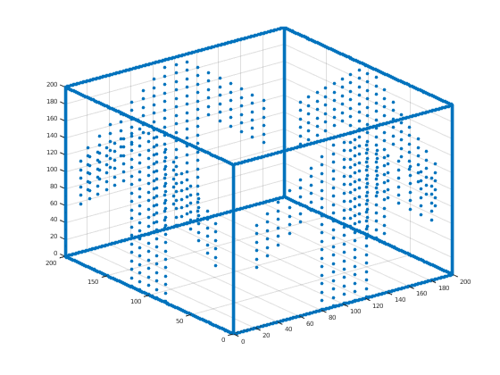

Contents
Homework 1
Document what you're doing. In particular, tell me who you worked with and what resources you used for each problem.
% first we define a bunch of useful transformations syms T(a,b) R(t) T(a,b) = [1 0 a;0 1 b;0 0 1]; R(t) = [cos(t) -sin(t) 0;sin(t) cos(t) 0;0 0 1];
Part I: the smiley face.
Plot the smiley face in mutiple festive colors with "hold on". Show me the four problems on the first group work.
% S is the points in the face. S = transpose([ -1 2 1 1 2 1 -3 0 1 3 0 1 -1 -3 1 1 -3 1 -2 -2 1 2 -2 1 0 -3.5 1 -2.5 -1 1 2.5 -1 1 ]); % first we plot the eyes red figure scatter(S(1,1:3),S(2,1:3), 250, 'r','filled') % hold on and plot the mouth according the doc % doc scatter hold on c = linspace(1,10, length(S(1, :))-2); scatter(S(1,3:end),S(2,3:end), 250, c,'filled') axis square;axis([-5 5 -5 5]); hold off
Part II: the cube.
Plot the unit cube C. first, Justin's pictures on pages 65 and 66.
clear clearvars I65 = imread('~/Desktop/page65.png'); I66 = imread('~/Desktop/page66.png'); figure imshow(I65) syms T(a,b,c) RX(t) RY(t) RZ(t) P(d) T(a,b,c)=[1 0 0 a;0 1 0 b;0 0 1 c;0 0 0 1]; RX(t)=[1 0 0 0 ; 0 cos(t) -sin(t) 0;0 sin(t) cos(t) 0 ; 0 0 0 1]; RY(t)=[cos(t) 0 sin(t) 0;0 1 0 0;-sin(t) 0 cos(t) 0 ;0 0 0 1]; RZ(t)=[cos(t) -sin(t) 0 0;sin(t) cos(t) 0 0 ; 0 0 1 0; 0 0 0 1]; P(d)=[1 0 0 0;0 1 0 0;0 0 0 0;0 0 -1/d 1]; Ax = [0:.1:1; zeros(1,11); zeros(1,11); ones(1,11)]; % Ax Ay = RZ(pi/2) * Ax; Az = RY(-pi/2) * Ax; % Cool okay. Now boost Ax, Ay, and Az to get the rest of the edges of the % cube. Then store the whole cube as C = [Ax Ay Az ...]. Ax0 = Ax; Ay0 = Ay; Az0 = Az; Ax1 = T(0, 1, 0) * Ax; Ax2 = T(0, 0, 1) * Ax; Ax3 = T(0, 1, 1) * Ax; Ay1 = T(1, 0, 0) * Ay; Ay2 = T(1, 0, 1) * Ay; Ay3 = T(0, 0, 1) * Ay; Az1 = T(1, 0, 0) * Az; Az2 = T(1, 1, 0) * Az; Az3 = T(0, 1, 0) * Az; C = [Ax0 Ax1 Ax2 Ax3 Ay0 Ay1 Ay2 Ay3 Az0 Az1 Az2 Az3]; % % Nice. This cube has the wrong dimensions though -- it should be scaled % up and shifted to get it to Justin's cube. Do that and call it CJ. % JC = transpose([-1 -1 1 1; 3 -1 1 1; 3 3 1 1; -1 3 1 1; -1 -1 3 1; 3 -1 3 1; 3 3 3 1; -1 3 3 1]); % figure % scatter3(JC(1, :), JC(2, :), JC(3, :), 'filled') CJ = [ 4 0 0 0; 0 4 0 0; 0 0 2 0; 0 0 0 1; ] * C; CJ = T(-1, -1, 1) * CJ; % Now prove that your cube is Justin's cube by creating the pictures on % pages 65 and 66. CJ1 = P(10) * CJ; for i=1:length(CJ1); CJ1(:,i)=CJ1(:,i) / CJ1(4,i); end; figure scatter(CJ1(1, :), CJ1(2, :),'filled') axis([-4 8 -4 8]); % page 66 figure imshow(I66) CJ2 = P(10) * T(0, 0, -1) * RZ(pi/12) * RY(pi/3) * RX(pi/6) * CJ; for i=1:length(CJ2); CJ2(:,i)=CJ2(:,i) / CJ2(4,i); end; figure scatter(CJ2(1, :), CJ2(2, :),'filled') axis([-2 6 -3 4]);

Part III: fun with projective space. No limit on group collaboration size.
% % Starting with the unit cube C, add a few more points to make it clear which way is up. % Call your decorated cube D. % Examples of how to do this: you could put an arrow inside the cube, or % add pips on the faces to create a six-sided die. Show me what D looks % like with scatter3. clearvars syms T(a,b,c) RX(t) RY(t) RZ(t) P(d) T(a,b,c)=[1 0 0 a;0 1 0 b;0 0 1 c;0 0 0 1]; RX(t)=[1 0 0 0 ; 0 cos(t) -sin(t) 0;0 sin(t) cos(t) 0 ; 0 0 0 1]; RY(t)=[cos(t) 0 sin(t) 0;0 1 0 0;-sin(t) 0 cos(t) 0 ;0 0 0 1]; RZ(t)=[cos(t) -sin(t) 0 0;sin(t) cos(t) 0 0 ; 0 0 1 0; 0 0 0 1]; P(d)=[1 0 0 0;0 1 0 0;0 0 0 0;0 0 -1/d 1]; Ax = [0:.1:1; zeros(1,11); zeros(1,11); ones(1,11)]; Ay = RZ(pi/2) * Ax; Az = RY(-pi/2) * Ax; % Cool okay. Now boost Ax, Ay, and Az to get the rest of the edges of the % cube. Then store the whole cube as C = [Ax Ay Az ...]. syms T(a,b,c) RX(t) RY(t) RZ(t) P(d) T(a,b,c)=[1 0 0 a;0 1 0 b;0 0 1 c;0 0 0 1]; RX(t)=[1 0 0 0 ; 0 cos(t) -sin(t) 0;0 sin(t) cos(t) 0 ; 0 0 0 1]; RY(t)=[cos(t) 0 sin(t) 0;0 1 0 0;-sin(t) 0 cos(t) 0 ;0 0 0 1]; RZ(t)=[cos(t) -sin(t) 0 0;sin(t) cos(t) 0 0 ; 0 0 1 0; 0 0 0 1]; P(d)=[1 0 0 0;0 1 0 0;0 0 0 0;0 0 -1/d 1];
now we open an image and sample a bunch of points from that image
convert index to points
[A, maps, alpha] = imread('~/Desktop/arrow.png'); ARROW = [0; 0; 0; 0]; for i=1:10:length(alpha); for j=1:10:length(alpha(i, :)); if alpha(i,j) > 0; ARROW = [ARROW [i; j; 0; 1]]; % TODO: perf end end end; Ax = [0:1:200; zeros(1,201); zeros(1,201); ones(1,201)]; Ay = RZ(pi/2) * Ax; Az = RY(-pi/2) * Ax; Ax0 = Ax; Ay0 = Ay; Az0 = Az; Ax1 = T(0, 200, 0) * Ax; Ax2 = T(0, 0, 200) * Ax; Ax3 = T(0, 200, 200) * Ax; Ay1 = T(200, 0, 0) * Ay; Ay2 = T(200, 0, 200) * Ay; Ay3 = T(0, 0, 200) * Ay; Az1 = T(200, 0, 0) * Az; Az2 = T(200, 200, 0) * Az; Az3 = T(0, 200, 0) * Az; ARROW_1 = RX(pi/2) * ARROW; ARROW_2 = T(0, 200, 0) * ARROW_1; ARROW_3 = RZ(pi/2) * ARROW_1; ARROW_4 = T(200, 0, 0) * ARROW_3; C = [Ax0 Ax1 Ax2 Ax3 Ay0 Ay1 Ay2 Ay3 Az0 Az1 Az2 Az3 ARROW_1 ARROW_2 ARROW_3 ARROW_4]; figure scatter3(C(1, :), C(2, :), C(3,:), 'filled')
Drop the file aff.m into the same folder as this one. Then give me an example of how to use the aff function by projecting D without having to copy-paste a for loop in this file.
Move D so that it's centered at the point (0,0,10). Then project with d = 10.
CU = aff(P(10) * T(-200, -200, -190) * C);
figure
scatter(CU(1, :), CU(2, :),'filled');
axis([-500 500 -500 500]);
What on Earth are you looking at? What happened to half of the points? Why is this happening? Move the cube around in lots of different ways and project with d = 10 until you figure it out. Show me the pictures that you find most helpful in explaining your thinking, and be sure that each picture is accompanied by at least one full sentence of written work. Here's the core question: when a line passes through infinity in projective space, where does it come out on the other side of infinity?
% All parallel intersect lines becomes one point when they pass through infinity in projective % space. It comes out from the other side since projective space is % cyclical instead of linear.